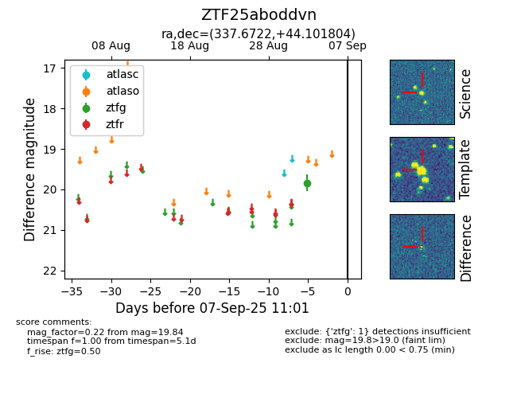

FINK: ZTF25aboddvn
Lasair: ZTF25aboddvn
ALeRCE: ZTF25aboddvn
ZTF25aboddvn (ztf,fink)
equatorial (ra, dec) = (337.6722,+44.10180)
galactic (l, b) = (97.9213,-11.82875)

last ztfg=19.84
1 ztfg detections